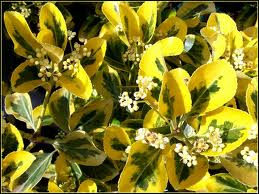

Fusain

Fusain (Evonymus europaeus de la famille des Célastracées)
Toxique pour le Korat.
Partie toxique pour les chats en général et le Korat en particulier :
Principalement les graines mais toutes les parties sont toxiques, même l'écorce.
Symptômes du processus pathologique :
Principalement digestifs avec diarrhées éventuellement hémorragiques, coliques et constipation chez les équidés. On observe également des convulsions avec tachycardie évoluant en abattement et prostration voire syncopes.
Lésions : gastro-entérite pouvant être hémorragique.
Origine de la toxicité (principe actif) :
Plusieurs alcaloïdes, notamment l'évonymine ainsi qu'un hétéroside cardiotonique en faible quantité, la digitoxigénine.